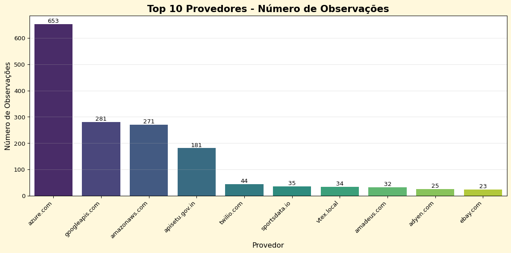

import pandas as pd
import seaborn as sns
import matplotlib.pyplot as plt
api_info = pd.read_csv('https://raw.githubusercontent.com/rfordatascience/tidytuesday/main/data/2025/2025-06-17/api_info.csv')
api_categories = pd.read_csv('https://raw.githubusercontent.com/rfordatascience/tidytuesday/main/data/2025/2025-06-17/api_categories.csv')
api_logos = pd.read_csv('https://raw.githubusercontent.com/rfordatascience/tidytuesday/main/data/2025/2025-06-17/api_logos.csv')
api_origins = pd.read_csv('https://raw.githubusercontent.com/rfordatascience/tidytuesday/main/data/2025/2025-06-17/api_origins.csv')
apisguru_apis = pd.read_csv('https://raw.githubusercontent.com/rfordatascience/tidytuesday/main/data/2025/2025-06-17/apisguru_apis.csv')No Tidytuesday dessa semana investigamos algumas tabelas da APIs Guru, que é uma iniciativa OpenSource de criar uma Wikipedia machine-readable de API disponíveis publicamente, gratuitamente ou não. O resposável pela organização dessa semana Jon Harmon tem criado um livro sobre APIs no R e uma série de pacotes para trabalhar com essas ferramentas.
Hoje farei a análise em Python.
Baixando os dados e exploração inicial
Dando uma olhada nas tabelas disponibililzadas, quero me concentrar em especial na tabela api_info, pois ela tem a variável provider_name, o que me permite checar quais são os principais fornecedores de APIs.
api_logos
api_categories
api_origins
apisguru_apis
api_info| name | contact_name | contact_url | description | title | provider_name | service_name | license_name | license_url | terms_of_service | |
|---|---|---|---|---|---|---|---|---|---|---|
| 0 | 1forge.com | 1Forge | http://1forge.com | Stock and Forex Data and Realtime Quotes | 1Forge Finance APIs | 1forge.com | NaN | NaN | NaN | NaN |
| 1 | 1password.com:events | NaN | NaN | 1Password Events API Specification. | Events API | 1password.com | events | NaN | NaN | NaN |
| 2 | 1password.local:connect | 1Password Integrations | https://support.1password.com/ | REST API interface for 1Password Connect. | 1Password Connect | 1password.local | connect | NaN | NaN | NaN |
| 3 | 6-dot-authentiqio.appspot.com | Authentiq team | http://authentiq.io/support | Strong authentication, without the passwords. | Authentiq API | 6-dot-authentiqio.appspot.com | NaN | Apache 2.0 | http://www.apache.org/licenses/LICENSE-2.0.html | http://authentiq.com/terms/ |
| 4 | ably.io:platform | Ably Support | https://www.ably.io/contact | The [REST API specification](https://www.ably.... | Platform API | ably.io | platform | NaN | NaN | NaN |
| ... | ... | ... | ... | ... | ... | ... | ... | ... | ... | ... |
| 2524 | zeno.fm | NaN | NaN | Aggregators API | Aggregators API Service | zeno.fm | NaN | NaN | NaN | NaN |
| 2525 | zenoti.com | NaN | NaN | Our API documentation has been moved to https:... | Zenoti API | zenoti.com | NaN | NaN | NaN | NaN |
| 2526 | zoom.us | Zoom Developers | https://developer.zoom.us/ | The Zoom API allows developers to access infor... | Zoom API | zoom.us | NaN | MIT for OAS 2.0 | https://opensource.org/licenses/MIT | https://zoom.us/docs/en-us/zoom_api_license_an... |
| 2527 | zoomconnect.com | NaN | NaN | The world's greatest SMS API | www.zoomconnect.com | zoomconnect.com | NaN | NaN | NaN | NaN |
| 2528 | zuora.com | NaN | NaN | \n\n# Introduction\n\nWelcome to the reference... | API Reference: Billing | zuora.com | NaN | NaN | NaN | NaN |
2529 rows × 10 columns
Quantos APIs os provedores fornecem?
api_info['provider_name'].value_counts().reset_index().head(n=50)| provider_name | count | |
|---|---|---|
| 0 | azure.com | 653 |
| 1 | googleapis.com | 281 |
| 2 | amazonaws.com | 271 |
| 3 | apisetu.gov.in | 181 |
| 4 | twilio.com | 44 |
| 5 | sportsdata.io | 35 |
| 6 | vtex.local | 34 |
| 7 | amadeus.com | 32 |
| 8 | adyen.com | 25 |
| 9 | ebay.com | 23 |
| 10 | nexmo.com | 20 |
| 11 | interzoid.com | 20 |
| 12 | github.com | 20 |
| 13 | microsoft.com | 17 |
| 14 | apideck.com | 16 |
| 15 | mastercard.com | 14 |
| 16 | hubapi.com | 12 |
| 17 | fungenerators.com | 12 |
| 18 | parliament.uk | 11 |
| 19 | nytimes.com | 11 |
| 20 | gov.bc.ca | 9 |
| 21 | ote-godaddy.com | 9 |
| 22 | epa.gov | 8 |
| 23 | codat.io | 7 |
| 24 | xero.com | 6 |
| 25 | deutschebahn.com | 6 |
| 26 | letmc.com | 6 |
| 27 | rapidapi.com | 6 |
| 28 | whapi.com | 6 |
| 29 | amentum.space | 5 |
| 30 | ndhm.gov.in | 5 |
| 31 | npr.org | 5 |
| 32 | import.io | 5 |
| 33 | openbanking.org.uk | 5 |
| 34 | vonage.com | 5 |
| 35 | wmata.com | 5 |
| 36 | haloapi.com | 4 |
| 37 | mercedes-benz.com | 4 |
| 38 | va.gov | 4 |
| 39 | walmart.com | 4 |
| 40 | docker.com | 3 |
| 41 | funtranslations.com | 3 |
| 42 | onsched.com | 3 |
| 43 | tomtom.com | 3 |
| 44 | presalytics.io | 3 |
| 45 | mailboxvalidator.com | 3 |
| 46 | seldon.local | 3 |
| 47 | hsbc.com | 3 |
| 48 | ticketmaster.com | 3 |
| 49 | apache.org | 3 |
Em outra oportunidade, como parte do meu interesse por OpenSource, quero verificar como o tipo de licença interagem com o perifl da API disponibilizada.
contagem = api_info[['provider_name', 'license_name']].value_counts().reset_index()
contagem| provider_name | license_name | count | |
|---|---|---|---|
| 0 | googleapis.com | Creative Commons Attribution 3.0 | 281 |
| 1 | amazonaws.com | Apache 2.0 License | 271 |
| 2 | twilio.com | Apache 2.0 | 44 |
| 3 | ebay.com | eBay API License Agreement | 23 |
| 4 | interzoid.com | Interzoid license | 20 |
| ... | ... | ... | ... |
| 178 | whapi.com | William Hill Online | 1 |
| 179 | wowza.com | Terms of Use | 1 |
| 180 | xtrf.eu | Apache 2.0 | 1 |
| 181 | yodlee.com | Yodlee Developer License | 1 |
| 182 | zoom.us | MIT for OAS 2.0 | 1 |
183 rows × 3 columns
E aqui termino com uma visualização simples dos 10 principais provedores de API
top_providers = api_info['provider_name'].value_counts().head(10)
plt.figure(figsize=(12, 6)).patch.set_facecolor('#fff8dc')
ax = sns.barplot(x=top_providers.index, y=top_providers.values, palette='viridis')
plt.title('Top 10 Provedores - Número de Observações', fontsize=16, fontweight='bold')
plt.xlabel('Provedor', fontsize=12)
plt.ylabel('Número de Observações', fontsize=12)
plt.xticks(rotation=45, ha='right')
plt.tight_layout()
# Adiciona os valores no topo das barras
for i, bar in enumerate(ax.patches):
plt.text(bar.get_x() + bar.get_width()/2, bar.get_height() + 0.5,
str(top_providers.values[i]), ha='center', va='bottom')
# Adiciona grade para facilitar a leitura
plt.grid(axis='y', alpha=0.3)C:\Users\Victor\AppData\Local\Temp\ipykernel_2992\3101477823.py:4: FutureWarning:
Passing `palette` without assigning `hue` is deprecated and will be removed in v0.14.0. Assign the `x` variable to `hue` and set `legend=False` for the same effect.
ax = sns.barplot(x=top_providers.index, y=top_providers.values, palette='viridis')
Trabalhar com Python tem sido interessante como alguém que saiu da vida acadêmica e por isso está bastante acostumado com R. Hoje eu perdi um bom tempo em reaprender como fazer contagens por categoria (usando tanto value_counts() como group_by()). Isso não por falta de conhecimento dessas funções, mas por confusão com as funções do R que fazem a mesma coisa mais com configurações diferentes.
De toda forma, essa é mais um resulado bem legal que gostaria de compartilhar.
Citation
BibTeX citation:
@online{batista2025,
author = {Batista, Victor},
title = {APIs {Guru}},
date = {2025-06-18},
url = {https://jvbatista1.github.io/posts/20250618_apisguru/},
langid = {en}
}
For attribution, please cite this work as:
Batista, Victor. 2025. “APIs Guru.” June 18, 2025. https://jvbatista1.github.io/posts/20250618_apisguru/.